Toxic was established in the summer of 2016 by our founder Svet. Him, along with Kris, Vasko, Niki, Miro, Ivo, and Kiro teamed up to try out for a spot at the asian pop culture event 'Aniventure 2016's k-pop dance cover panel panel. The 7 started off as just a bunch of buddies looking for a hobby and they could have never known what the future held. We were the first all male k-pop cover dance group in Bulgaria and we remain the only one to this day.
